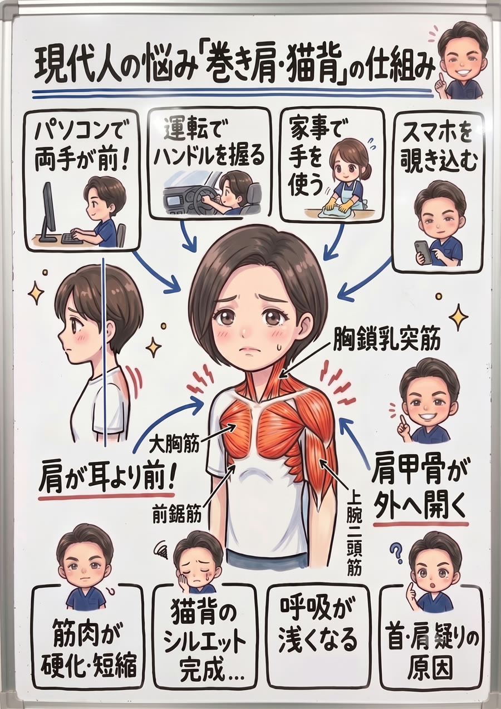

「背筋を伸ばして」と言われても、気づけばまた丸い背中。それは意志の弱さではなく、筋肉が“猫背の形”で固まっているから。なぜそうなるのかを、筋肉のレベルまで解説します。

結論から言います。犯人は背中ではなく、「一日中、腕を体の前で使い続ける」という現代人の生活そのものです。
パソコンで両手が前、運転でハンドルを握る、家事で手を使う、スマホを覗き込む——。どれも共通して、両腕を体の前に出し、脇をしめて手を体の中心へ寄せた姿勢を、一日中キープし続けています。この姿勢を担う体の前側の筋肉ばかりが酷使され、縮んで硬く「短縮」していきます。

硬くなった大胸筋・小胸筋は、肩甲骨を前へ傾け、肩を内側へ丸め込みます。前鋸筋は肩甲骨を外へ滑らせ（外転）、上腕二頭筋はひじを曲げた状態で腕を前に留めます。その結果、肩甲骨が背中から外へ開き、上腕骨は内側にねじれ（内旋）、肩が耳より前に出た「巻き肩」が生まれます。
巻き肩になると、背中側で肩甲骨を引き寄せる筋肉（菱形筋・僧帽筋の中部〜下部）は、引き伸ばされたまま使われず弱っていきます。「縮んで強い前」と「伸びて弱い後ろ」——この筋肉バランスの崩れが固定化すると、丸まった背中（猫背）が“その人の普通”になり、自力ではもう戻せなくなるのです。

「姿勢を意識しましょう」——よく言われます。でも、考えてみてください。意識しただけで、筋肉はつくでしょうか？ 意識しただけで、痩せられるでしょうか？ 姿勢もこれと同じで、残念ながら、意識だけでは変わらないんです。決してあなたの努力が足りないわけではありません。
意識して胸を張れるのは、その瞬間だけ。短縮して固まった前面の筋肉と、弱って働けない背中の筋肉をそのままにして、意識だけで姿勢を保ち続けるのは、誰にとってもとても難しいことなんです。ストレッチ動画を真似ても、縮んだ小胸筋や骨格の歪みは、なかなか戻ってくれません。
では、どうすればいいのか。答えはひとつです。体の仕組みと原因を突き止め、その体に合った具体的な施術と姿勢改善メニューを「継続」する。これに尽きます。 ダイエットが食事メニューの継続で、トレーニングが筋トレメニューの継続で結果を出すのと、まったく同じ。意識やその場しのぎではなく、原因に合った正しいことを、続ける——それだけが、姿勢を本当に変える唯一の道です。
ここが、私たちが最もお伝えしたい部分です。
正直にお話しします。原因である前面の筋肉や骨格へのアプローチは、必ずしも“気持ちいい場所”への施術ではありません。でもそれこそが、固まった猫背を根本から変えるために本当に必要な一手です。とはいえ、今つらい首・肩・背中の張りを我慢してもらうつもりはありません。「今のつらさへの対応」と「原因への一手」を、必ずセットで行います。気持ちいいマッサージ“だけ”で終われば、それは対症療法。その場は楽でも、原因が残っている限りまた戻ってきてしまうからです。
原因は、あなたの体そのものではなくあなたの“生活”の中にあります。どんな机で、どんな腕の置き方で、どれだけスマホを見て、どんな寝方をしているか——この生活習慣そのものに、根本改善のカギがあります。だから当院は、症状だけでなくあなたの生活そのものをとことん深くお聞きし、原因が潜む習慣にメスを入れます。ここまで踏み込む接骨院・整体は多くありません。これが当院の考える“本当の根本治療”です。
ボキボキが苦手・怖い方へ。刺激の少ないやさしい矯正で、無理なく整えます。お子さまやご年配の方にも安心です。
「ボキボキしてスッキリしたい」「あの爽快感が好き」という方へ。しっかり音の鳴るダイナミックな矯正も、当院の得意技です。
「ボキボキしてくれる整体を探していた」という方も、ぜひご相談ください。ご希望とお身体の状態に合わせて、最適な方をお選びいただけます。
原因の本丸である大胸筋・小胸筋・上腕二頭筋・前鋸筋の硬さを狙って緩め、肩甲骨と腕を前へ引く力を解きます。
引き伸ばされて眠っている菱形筋・僧帽筋中下部を再教育し、肩甲骨を正しい位置へ引き戻す力を取り戻します。肩甲骨はがしも併用します。
丸まった胸椎や後傾した骨盤を矯正し、背骨が自然なS字を描き、頭が背骨の真上に乗る土台をつくります。
ここを整えることが、再発を防ぐいちばんのカギ。机・モニター・スマホの高さ、腕の置き方、肩甲骨を戻すセルフケアまで、生活に合わせて具体的にお伝えします。

お仕事や生活での腕の使い方・スマホ時間を伺い、「どうなりたいか」のゴールも一緒に決めます。

立ち姿勢を撮影し、頭の位置・肩の巻き込み・肩甲骨の開き・骨盤の傾きをチェック。前面と背面の筋肉バランスも確認します。

前面筋のリリース→背面筋の活性化→骨格矯正を行い、施術後に再撮影。キープするためのセルフケアと環境改善までお伝えします。
意志が弱いからではありません。胸や腕の前側の筋肉（大胸筋・小胸筋・前鋸筋・上腕二頭筋）が短縮して固まり、肩甲骨と腕を常に前へ引っ張っているからです。この“引っ張り”を筋肉から解かない限り、力を抜いた瞬間に戻ります。当院は前面と背面のバランスから整えます。
1回でも「肩が開いて呼吸が楽」といった変化を実感される方が多いですが、長年のクセを定着させるには複数回の矯正＋生活の見直しが必要です。初回の検査で目安回数と計画をご提案します。
はい。ボキボキしないソフト矯正と、しっかり音の鳴るダイナミック矯正（ボキボキ）の両方をご用意しています。苦手な方はソフト矯正で無理なく整えますのでご安心ください。逆にボキボキしたい方も歓迎です。
はい。頭が前に出るほど首・肩は過緊張し、肩こり・首こり・緊張型頭痛を招きます。丸まった胸郭は呼吸も浅くします。猫背・巻き肩は“見た目”だけの問題ではありません。